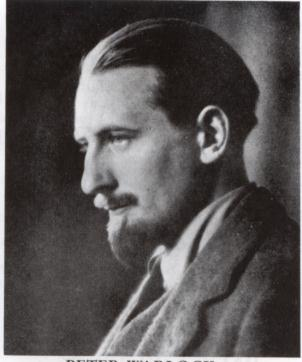

Saturday, April the 20th, 2013
back to: title, date or indexes
The composer Peter Warlock (1894–1930)—real name Philip Heseltine—was declared unfit for military service during the First World War on account of general neurasthenia and “an inability to micturate when mentally excited, and especially in the presence of other people, with the consequence that he has had occasional prolonged retention”, according to a Harley Street doctor's report.
As a seemingly fit young man swanning about London, he was subjected to insults from “officious patriots”. His common retort to such persons was to declaim one of his favourite quotations, from Samuel Butler's poem Psalm Of Montreal:
O brother-in-law to Mr. Spurgeon's haberdasher,
Who seasonest also the skins of Canadian owls,
Thou callest trousers ‘pants,’ whereas I call them ‘trousers',
Therefore thou art in hell-fire, and may the Lord pity thee!
